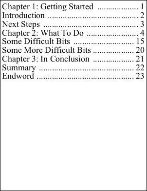

| Kerning Property | ||||||||||
|
|
Notes
|
The kerning method. Kerning is similar to character spacing in that it controls how far apart two characters are. However rather than being a constant, it is a value which is determined by the two characters themselves. So the kerning for "tt" would likely be different than for "te". The KerningType flags enumeration may take the following values:
The default kerning method is based around the kerning tables in the TrueType font file. Not all fonts contain kerning tables so not all fonts will kern. There are two font tables which may be used for kerning - the kern tables and the GPOS tables. The kern tables are an older and simpler standard while the GPOS tables are a more recent and complex standard. Many fonts will contain both - the kern table for backwards compatibility and the GPOS table for more sophisticated layout. When the text Direction is left at Default and kerning is on, only TrueType kern tables are used for kerning - the GPOS tables are not used. If all the following conditions are met then the text shaping engine is engaged and the OpenType GPOS table is preferred over the kern table.
When text shaping is used kern tables (if available) are used for applying kerning to combinations involving white space characters. If you prefer the GPOS tables for this type of combination you should specify the DefaultWithWhiteSpace. So for backwards compatibility with older layout code you will want to use the defaults but for newer code where you want better kerning, you may wish to change these settings.
|
Example
|
The following shows how to insert a table of contents while disabling kerning. [C#] Using the following input text.
We get the following output.  TableOfContentsWithLeaders.pdf Also see example code in: FontObject RuneWidths Property, FontObject Widths Property.
|